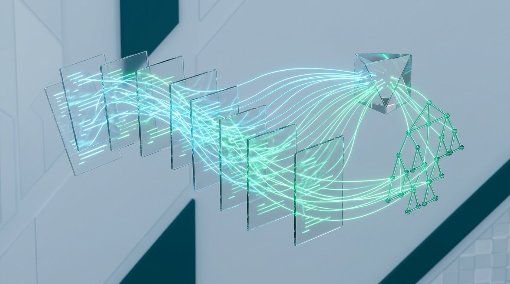

Master flow-state agentic coding in Windsurf and Devin Desktop—combining Cascade & Devin Local multi-file edits, Memories & Rules, live Previews, MCP integrations, and cloud-to-desktop Devin handoffs.
Cascade and the Rust-powered Devin Local harness..devin/rules/ & .windsurf/rules/, slash-invoked Workflows, AGENTS.md, and auto-saved Memories.Following Cognition AI’s July 2025 acquisition of Windsurf and the June 2, 2026 rebrand to Devin Desktop, Windsurf’s signature real-time Flows architecture merged with Devin’s autonomous cloud engineering engine. Today, one workspace orchestrates local keystroke-speed edits and parallel cloud PR agents side by side.
Unlike chat sidebars that force you to manually paste files and stack traces, Windsurf / Devin Desktop maintains a live Flow state linking your editor buffer, terminal exit codes, browser DOM, and remote cloud sessions:
windsurf.com redirects to devin.ai/desktop.Cascade..devin/rules/ takes precedence, while .windsurf/rules/, .windsurfrules, and AGENTS.md still load seamlessly..devinignore, .windsurfignore, and .codeiumignore are all honored during indexing.Burning frontier reasoning quota on boilerplate completions slows you down, while relying on Tab autocomplete for a 14-file schema migration invites regressions. Use this matrix to pick the optimal execution surface every time.
| Mode / Surface | Execution Scope | Best-Fit Engineering Tasks | Context & Tools | Quota & Latency Profile |
|---|---|---|---|---|
Supercomplete / TabTab • Cmd+I |
Single cursor, next-edit jump, or inline selection diff | Writing functions, type signatures, test cases, repetitive edits | Open tabs, recent keystrokes, local AST, clipboard | Unlimited on all plans (incl. Free); sub-200ms latency |
| Cascade Chat / Ask Read-only Q&A |
Zero file mutations; explains code, traces bugs, drafts specs | Onboarding to unfamiliar services, root-cause tracing, PR Q&A | Indexed repo, @file, @symbol, terminal, MCP reads |
Low quota draw; ideal with fast native SWE-2 |
| Cascade Write / Devin Local Default Agent |
Multi-file edits, shell commands, test loops, Live Preview | Feature builds, refactors (2–25 files), click-to-edit UI, CI fixes | Full Flow state, terminal stderr, Rules, Memories, MCP | Draws daily/weekly quota; Devin Local (Rust) saves ~30% |
| Planning Mode Plan → Approve |
Generates persistent Markdown blueprint before writing code | Cross-cutting architecture, DB migrations, auth rewrites | Deep repo search + human checkpoint before mutations | Higher upfront reasoning; prevents costly rework loops |
| Devin Autonomous Cloud Async Sandbox |
Isolated cloud VM, git branches, CI runs, draft PRs in parallel | Backlog triage, dependency upgrades, test sprints, Linear tickets | Repo clone, Devin Secrets, Playbooks, GitHub/Linear | Runs unattended (10+ concurrent); billed from shared quota |
In March–April 2026, Cognition retired legacy monthly prompt credits and $2.25 ACU packs on self-serve tiers in favor of daily & weekly refreshing quotas shared across Devin Desktop, Devin CLI, and Devin Cloud, with optional overages billed at raw API token rates.
| Plan Tier | Published Price | Included Agent & Editor Quotas | Model Access | Governance & ZDR |
|---|---|---|---|---|
| Free | $0 / mo (1 user) | Unlimited Tab & inline edits; light daily agent quota | Limited base models (SWE-1 Lite / entry) | No ZDR opt-out; may train models |
| Pro | $20 / mo (1 user) | Standard daily/weekly quota (Desktop, CLI, Cloud); API overages | Frontier (Claude, GPT-5, Gemini) + SWE-2 |
Opt-in ZDR from profile settings |
| Max | $200 / mo (1 user) | Heavy daily/weekly quotas & higher concurrent cloud sessions | Full frontier + high-reasoning + SWE-2 |
Opt-in ZDR; priority routing |
| Teams | $80/mo + $40/seat | Up to 100–200 users; shared credit pool & team Spaces | Full frontier + SWE-2; admin allowlists |
ZDR default ON; central billing |
| Enterprise | Custom (Unlim.) | Unlimited concurrent agents; custom ACU or token contracts | Custom routing, VPC / AWS GovCloud | SOC 2 Type II, SSO/SCIM, org locks |
Devin Desktop elevates the classic Windsurf editor into a unified Agent Command Center. Master these seven high-leverage controls to move seamlessly between multi-agent Spaces, local code diffs, DOM previews, and persistent Memories.
.devin/rules/api.md [glob]AGENTS.md [always]pnpm test:checkout
pnpm vitest run src/checkout
/ship-pr @api.md [Plan ✓]
Send to Cloud →
/workflows, attach @files or rules, and escalate any thread to Devin Cloud.
.devin/rules/, .windsurf/rules/, AGENTS.md, and auto-generated Memories; prune stale facts in one click.
The secret behind Windsurf’s Cascade—and its Rust-rewritten successor Devin Local—is bidirectional Flow state: the agent watches your manual edits, open buffers, and terminal output in real time, then closes the loop by running verification commands automatically.

Enable Planning Mode and tag only the entry-point symbols (@CheckoutRouter, @OrderSchema). Let the agent map all downstream callers and produce a step-by-step checklist before mutating disk.
Approve the plan and let Devin Local apply atomic hunks across types, services, and UI components. If you hand-edit a naming convention mid-flight, Flow Awareness automatically adapts subsequent files.
End every prompt with an explicit verification gate (e.g., “Run pnpm typecheck && pnpm vitest run and fix any regressions”). The agent reads stderr directly and self-corrects without copy-pasting.
devin CLI over SSH or tmux.AGENTS.md so the agent never guesses npm vs. pnpm.@mention Sparingly: Mentioning 15 whole files wastes quota; let semantic search + AST indexing pull only relevant functions.AGENTS.mdRepeating your architecture standards every morning wastes quota and invites drift. Devin Desktop / Windsurf layers five distinct customization mechanisms—each with clear precedence, activation triggers, and hard character caps.
.devin/rules/api-layer.md (or .windsurf/rules/api-layer.md) + AGENTS.md
| Mechanism & Path | Scope & Git | Activation Trigger | Hard Limit | Best Used For |
|---|---|---|---|---|
Directory Rules.devin/rules/*.md.windsurf/rules/*.md |
Workspace (committed to git) | always_on, glob, model_decision, or manual (@rule) |
12,000 chars per rule file | Domain conventions (API, React, SQL, testing) scoped by folder |
Cross-Agent SpecAGENTS.md (root / subdirs) |
Repo-wide (universal standard) | Auto-loaded when working inside root or matching subdirectory | Keep concise (<4,000 chars) | Build/test commands & architecture shared with Codex / Claude |
Global Rulesglobal_rules.md |
User-local (all repos) | Always applied to every local session across workspaces | 6,000 chars total | Personal tone, TypeScript preferences, commit style |
Workflows.devin/workflows/*.md.windsurf/workflows/*.md |
Workspace (committed to git) | Explicit slash invocation (e.g., /ship-pr, /audit-sql) |
Multi-step Markdown SOP | Repeatable multi-step checklists, release prep, migrations |
| Memories Local Inspector DB |
Local per workspace | Auto-saved by Cascade / Devin Local or pinned by user | Auto-pruned; audit weekly | Ephemeral quirks, local ports, env hints learned during debugging |
always_on: Use sparingly (max 1–2 core files) so you don’t bloat every prompt’s system context.glob: Gold standard—attach ["src/db/**/*.sql"] only when touching SQL files.model_decision: Write a razor-sharp 1-line description so the router activates it reliably.manual: Reserve for heavy migration or security-audit playbooks invoked via @rule-name..windsurfrules.windsurfrules still loads, but splitting it into scoped .devin/rules/*.md files cuts irrelevant token overhead..devin/rules/ and .windsurf/rules/ exist, .devin/rules/ wins..cursor/rules/*.mdc into .devin/rules/.Stop describing CSS bugs in paragraphs or switching between six dashboards. Live Previews wire your running web app directly into Cascade / Devin Local, while Model Context Protocol (MCP) servers connect databases, issue trackers, and observability logs.
fetch() calls stream straight to Cascade / Devin Local with one click.One-Click Deploys: Push prototypes to shareable staging URLs directly from the toolbar.
~/.config/devin/mcp_config.json (Windows: %APPDATA%\devin\mcp_config.json)..devin/mcp_config.json in repo root for team-shared tools (Devin Local reads both).mcp_config.json Example (Read-Only DB + Linear + GitHub){
"mcpServers": {
"linear": {
"command": "npx", "args": ["-y", "@linear/mcp-server"],
"env": { "LINEAR_API_KEY": "${env:LINEAR_API_KEY}" }
},
"postgres-readonly": {
"command": "npx",
"args": ["-y", "@modelcontextprotocol/server-postgres", "${env:READONLY_DB_URL}"]
},
"github": {
"serverUrl": "https://api.githubcopilot.com/mcp/",
"headers": { "Authorization": "Bearer ${env:GITHUB_PAT}" }
}
}
}| MCP Server | Transport | What Cascade / Devin Local Can Do | Recommended Guardrail |
|---|---|---|---|
| Linear / Jira | STDIO / HTTP | Read acceptance criteria, link branches, post PR comments | Allowlist reads; require approval on writes |
| Postgres / Supabase | STDIO | Inspect live schemas, explain slow queries, verify seed data | Use a read-only role; no prod write creds |
| Playwright / Browser | STDIO | Run headless E2E flows, capture screenshots, assert a11y | Restrict to localhost and staging |
| Sentry / Datadog | Remote HTTP | Pull live stack traces, breadcrumbs, and release diffs | Scope token to read-only project issues |
.devin/mcp_config.json${env:VAR_NAME}) or your OS keychain, and keep personal tokens in global ~/.config/devin/mcp_config.json rather than committing them to git.
The biggest productivity unlock in Devin Desktop is knowing where a task should run. Keep high-touch architectural and visual work local in Cascade / Devin Local, and dispatch bounded, verifiable work to parallel Devin Cloud sandboxes inside the same Command Center Space.
| Task Dimension | Keep Local (Cascade / Devin Local) | Delegate to Devin Cloud (Autonomous) |
|---|---|---|
| Spec Clarity | Exploratory, ambiguous UX, or evolving product architecture requiring rapid back-and-forth | Clear acceptance criteria, reproducible bug report, or well-defined migration playbook |
| Verification Signal | Needs human visual eye in Live Preview, local hardware/GPU, or private VPN services | Machine-verifiable via unit/E2E tests, TypeScript compiler, linters, or CI checks |
| Parallelism | 1–2 active local worktrees competing for your laptop CPU/RAM and attention | 3–10+ concurrent cloud sandboxes clearing backlog bugs, upgrades, or test debt overnight |
| Ideal Examples | Designing a new dashboard layout, debugging a tricky race condition, live Click-to-Edit polish | Upgrading React 18→19, adding 40 API integration tests, fixing 6 Sentry errors into draft PRs |
Copy these battle-tested configurations directly into .devin/ (or .windsurf/), AGENTS.md, and your Cascade / Devin Local prompt box to eliminate repetitive guidance and standardize every PR.
| # | Recipe Name | File / Invocation | Outcome & When to Trigger |
|---|---|---|---|
| 1 | Scoped API Rule | .devin/rules/api.md |
Auto-enforces Zod validation & typed Result errors on all API routes |
| 2 | /ship-pr Workflow |
.devin/workflows/ship-pr.md |
Runs typecheck, tests, diff audit, and drafts a structured PR description |
| 3 | Universal AGENTS.md |
AGENTS.md (repo root) |
Single source of truth for Devin Desktop, Devin Cloud, CLI & ACP agents |
| 4 | Click-to-Edit UI Fix | Live Preview + Cascade | Fixes responsive/a11y regressions in 1 turn using selected DOM context |
| 5 | Cloud Migration Brief | Command Center → Cloud | Dispatches a bounded, test-verified refactor to an async Devin Cloud VM |
.devin/rules/api.md (Glob Rule)---
trigger: glob
globs: ["src/api/**/*.ts", "src/routes/**/*.ts"]
description: Typed API handler & Zod conventions
---
- Validate req.body & params with Zod v4 schemas.
- Return `Result<T, ApiError>`; never throw raw strings.
- Never log PII, auth headers, or raw payment tokens.
- Add a Vitest integration test for every new route..devin/workflows/ship-pr.md (/ship-pr)# /ship-pr — Pre-Merge Verification Workflow
1. Run `git status` and review all staged/unstaged diffs.
2. Execute `pnpm typecheck && pnpm lint && pnpm test`.
3. If any check fails, fix root cause and re-run until green.
4. Scan diff for leftover `console.log` or hardcoded secrets.
5. Output a concise PR summary: What, Why, Verification, Risk.[Selected DOM: <div.pricing-grid> + <button.cta-pro>]
Fix mobile overflow at 375px viewport: stack cards to 1 col,
ensure 44px min tap target on CTA, preserve WCAG AA contrast.
Verify in Live Preview with 0 console or hydration errors.AGENTS.md (Cross-Agent Spec)# Repository Engineering Guide (AGENTS.md)
## Commands
- Install: `pnpm install --frozen-lockfile`
- Dev: `pnpm dev` (port 3000) | Test: `pnpm vitest run`
- Typecheck & Lint: `pnpm typecheck && pnpm biome check .`
## Architecture & Guardrails
- Stack: Next.js 16 App Router, TypeScript strict, Drizzle ORM.
- Never edit `src/db/migrations/` manually; use `pnpm db:gen`.
- All new features require unit tests + updated Zod schemas.Goal: Migrate all `moment` calls in `src/billing/` to `date-fns` v4.
Constraints:
- Preserve exact UTC ISO-8601 output and timezone formatting.
- Remove `moment` from package.json only if zero imports remain.
Verification:
- Run `pnpm typecheck && pnpm vitest run src/billing`.
- Open a Draft PR with before/after bundle-size delta./new-endpoint by instructing the agent to run /ship-pr) to guarantee every scaffolded feature passes CI before you even review the diff.
An agentic IDE reads untrusted files, executes shell commands, and invokes external MCP servers with your developer credentials. Pair Cognition’s built-in Zero Data Retention (ZDR) with defense-in-depth workspace guardrails.
.gitignore, node_modules, and paths listed in .devinignore, .windsurfignore, or .codeiumignore..env files.| Attack Surface | Real-World Risk (2025–2026 Lessons) | Mandatory Team Control |
|---|---|---|
| Auto-Execution / Turbo Mode | Prompt injection in cloned repos or PR comments can trigger destructive shell commands | Disable blanket Turbo mode; allowlist safe read/test commands (pnpm test, git diff) and require approval for curl, rm, or deploys |
| MCP Server Permissions | Unvetted STDIO servers or local config tampering can exfiltrate tokens outside IDE logs | Keep Devin Local’s default MCP approval prompt ON; enforce an org-level MCP server allowlist; bind DB MCPs to read-only roles |
| Open VSX Extensions | Supply-chain malware (e.g., 2026 GlassWorm Open VSX campaign) runs with full dev privileges | Enforce an enterprise extension allowlist; pin verified publishers and audit installed extensions quarterly |
| Generated Code & Deps | Hallucinated packages (slopsquatting) or subtle auth/SQLi flaws introduced in multi-file diffs | Enforce GitHub branch protections + automated SAST/SCA (Semgrep, Snyk, CodeQL) on every Devin & local PR |
| Quota & Overage Metering | Runaway frontier reasoning loops or bloated context windows trigger unexpected API-rate overages | Default everyday tasks to SWE-2; set monthly Team spend caps; monitor usage telemetry in Devin Admin |
.devinignore (Mirror to .windsurfignore)# Secrets & credentials
.env*
*.pem
*.key
secrets/
# Heavy build artifacts & fixtures
dist/
coverage/
test-fixtures/large-dumps/High-velocity engineering teams stop treating cloud agents and desktop IDEs as separate worlds. Wire Linear/Slack, Devin Cloud, Devin Desktop (Cascade / Devin Local), Live Preview, and GitHub CI into one continuous shipping conveyor belt.
@devin in Linear or Slack only when the ticket has a concrete repro or acceptance checklist.AGENTS.md & Rules: Because Devin Cloud reads the exact same .devin/rules/ and AGENTS.md as Devin Desktop, its draft PR already matches your stack conventions./ship-pr: Standardize typecheck, lint, test, and PR summary generation before requesting human peer review..devin/rules/ so neither Cascade nor Devin Cloud repeats the mistake.
Every Friday, have one engineer prune outdated local Memories, promote high-value debugging discoveries into git-committed .devin/rules/*.md files, and archive unused MCP servers. Teams that garden their rules weekly cut agent rework turns by 40%+ and keep daily quota burn predictable.
When an agentic loop stalls, ignores a rule, or burns quota too fast, diagnose the exact root cause in seconds with this field-tested clinic—then run the 6-point pre-flight check on every new workspace.
| # | Symptom | Root Cause | Instant Fix |
|---|---|---|---|
| 1 | Rule file silently ignored | File exceeded 12,000-char workspace cap, invalid YAML frontmatter, or glob mismatch | Trim under 12k chars, verify trigger: glob syntax, and confirm active badge in the Rules Inspector |
| 2 | MCP tools missing or failing | Exceeded the 100 active tools cap, invalid JSON, or missing env var in mcp_config.json |
Disable unused tools in MCP panel to stay <100; validate JSON and export env vars before launching IDE |
| 3 | Agent loops on same test error | Stale conversation context or missing runtime detail (e.g., wrong Node/DB port) | Revert checkpoint, start a fresh session, run failing test in terminal once so Flow captures exact stderr |
| 4 | Rapid daily quota exhaustion | Defaulting routine edits to frontier high-reasoning models or 40+ turn monolithic chats | Switch everyday tasks to SWE-2, use Devin Local (Rust) for ~30% token savings, start fresh per PR |
| 5 | Live Preview Click-to-Edit won’t attach | Dev server running on blocked port, non-Chromium browser, or HTTPS mixed-content block | Launch Preview from Cascade toolbar (IDE webview or Chrome/Arc proxy) and verify localhost port |
| 6 | Wrong conventions across files | Stale auto-generated Memory contradicting newer .devin/rules/ or AGENTS.md |
Open Memories Inspector, delete conflicting local memories, and codify the canonical rule in git |
| 7 | Devin Cloud PR diverges from local | Cloud sandbox lacked env setup, build script, or clear acceptance criteria | Add exact install/test commands to root AGENTS.md and store required keys in Devin Settings Secrets |
AGENTS.md Committed: Lists exact package manager, dev port, typecheck, lint, and test commands for local & cloud agents..devin/rules/ Active: Core rules split by glob trigger (each ≤12k chars); legacy .windsurfrules retired or synced..devinignore & .windsurfignore exclude secrets & dumps./ship-pr Workflow Ready: Reusable workflow in .devin/workflows/ enforces green CI checks and diff hygiene before every PR.SWE-2 on Devin Local; Planning Mode & Devin Cloud reserved for heavy lifts.